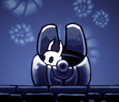

307
The Vessel

Blue Dragon Killing
Notches (Passive) - You start with one charm slot, called a notch. You gain one additional charm slot at nights 2, 4, and 6.
Charms (Passive) - You have a diverse list of Charms to choose from. They are presented as it follows:
Fury of the Fallen - If you are attacked and survive, your attacks are unhealable.
Baldur Shell - Survive the next attack made upon you. Once this effect is triggered, the charm is unusable. You will be notified of it.
Nailmaster’s Glory - You gain a Prepare night action. If you use it, you will gain Occupy and Redirection immunity for your next night action.
Weaversong - If there are any neighbourizer-like abilities in the game, their actions will be redirected unto you if used on anyone else. Conversions are the exception.
Equipable only on day 3 and forwards:
Kingsoul - Every day or night, this charm adquires the effect of another charm you don’t have equiped. It also can give you abilities of charms you can’t equip and charms that are broken. You don’t know which ability was randed.
Grubberfly’s Elegy - As long you didn’t have even a single vote in the final vote count at any given day, you can use your night actions during day.
Mark of Pride - Non-killing actions of Neutrals won’t work on you.
Thorns of Agony - If you are lynched, your hammerer dies alongside you.
Equipable only on day 5 and forwards:
Quick Focus - If you use this charm alongside Kingsoul, you are informed of which ability you randed.
Dream Wielder - If you visit a member of a scum faction at night, you will also occupy them.
Sprintmaster - The restriction on your night action is lifted.
Equipable only on day 7 and forwards:
Grimmchild - If a player not aligned Blue Dragon visits you, you will attack them.
Void Heart - You will know if you target a neutral with your night ability.
Joni’s Blessing - You are night immune, but can’t be healed.
Quick Slash - You can use your night ability two times each night on different targets.
Soul Eater - If you hammer a player not aligned with the Blue Dragon, you will need one more vote to be lynched. This effect is stackable.
Bench (Day) - Equip a Charm to an empty notch, or change the charm that is equiped on a slot for another - Infinite Uses.
Nail (Night) - If a player has made less than 20*number of days posts, attack them. - Infinite Uses.
Your objective is to defeat the scum faction and any neutrals that seek to do you harm
Converts to the Broken Vessel (308) or the Acolyte (708).
308
The Broken Vessel
Unseen Offensive
Infected (Passive) - The Radiance is the only charm you need. Any charms you had before are destroyed.
Slash (Day) - Roleblock day actions of your target. - 3 uses.
Flail (Night) - Swing your nail around. The players visiting you this night are occupied the next night. - 2 uses.
Cascade (Night) - A random player visiting you will be converted to the Unseen tonight. - 1 use.
Your objective is to defeat the Blue Dragon and any neutrals that seek to do you harm
309 - This player thinks they are a Reaper, but is in reality a Knight and wins with BD.
Comments that should be removed before handing out the classcard are in code
The Reaper 

Neutral Blue Dragon Killer
Consume Soul (Passive) - If you die at night with at least one soul, you will consume it and come back to life. (Does not work if executed by The Prince) You start with two souls. You will gain one soul on a successful reap. You are aware of the number of souls you hold. This passive is bastard and does nothing
**Armored (Passive)** - Your first successful use of Defend will not kill you.
Icy Touch (Day) - Choose to do a number of the following actions to target player. You will consume a soul for each action chosen. Occupy target player this day. Occupy target player this night. Cancel target player’s vote for the rest of the day. - Infinite uses 
This also does nothing
Reap (Night) - Reap the soul of a player, killing them bypassing healing and occupying them. - Infinite uses **true effect of this ability is: You will guard the target player tonight, giving your life to kill their attacker(s). - Infinite uses :crown:
Gather Darkness (Night) - Use Reap on target player. In addition, choose to do a number of the following modifications. You will consume a soul for each modification chosen. Bypass death immunity or you are occupy/redirection immune for this night. - Infinite uses **true effect of this ability is: Choose a player to attack. If they are a member of the Blue Dragon, you will also take your own life. - Infinite uses
Your objective is to defeat the Blue Dragon, Unseen, Cult and any neutrals that dare stand in your way.
*Your objective is to defeat the Unseen or Cult, and any neutrals that seek to do you harm.*


 's subsequent ability:
's subsequent ability: